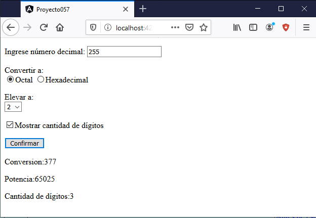

Vimos en los conceptos anteriores como trabajar con formularios reactivos en Angular, pero siempre utilizando un input de tipo texto o un textarea. Ahora veremos como configurar los controles checkbox, radio y select.
Confeccionar un formulario que permita al usuario ingresar un valor decimal y luego pueda seleccionar:
Crearemos primero el proyecto:
ng new proyecto057
Importamos la clase 'ReactiveFormModule' modificando el archivo 'app.module.ts':
import { BrowserModule } from '@angular/platform-browser';
import { NgModule } from '@angular/core';
import { ReactiveFormsModule } from '@angular/forms';
import { AppComponent } from './app.component';
@NgModule({
declarations: [
AppComponent
],
imports: [
BrowserModule,
ReactiveFormsModule
],
providers: [],
bootstrap: [AppComponent]
})
export class AppModule { }
Modificamos la vista de la componente que muestra el formulario reactivo (app.component.html):
<form [formGroup]="formularioConversion" (ngSubmit)="submit()">
<p>Ingrese número decimal:
<input type="text" formControlName="numerodecimal">
</p>
<p>Convertir a:<br>
<input type="radio" formControlName="base" value="octal">Octal
<input type="radio" formControlName="base" value="hexadecimal">Hexadecimal
</p>
<p>Elevar a:<br>
<select formControlName="potencia">
<option>2</option>
<option>3</option>
<option>4</option>
</select>
</p>
<p><input type="checkbox" formControlName="largo">Mostrar cantidad de dígitos
</p>
<p><button type="submit">Confirmar</button></p>
</form>
<div>
<p>Conversion:{{conversion}}</p>
<p>Potencia:{{potenciaNumero}}</p>
<p>Cantidad de dígitos:{{cantidad}}</p>
</div>
Analizaremos este archivo en conjunto luego de presentar 'app.component.ts'
La clase asociada a la vista es (app.component.ts):
import { Component } from '@angular/core';
import { FormGroup, FormControl } from '@angular/forms';
@Component({
selector: 'app-root',
templateUrl: './app.component.html',
styleUrls: ['./app.component.css']
})
export class AppComponent {
conversion!: string;
potenciaNumero!: number;
cantidad!: number;
formularioConversion = new FormGroup({
numerodecimal: new FormControl(''),
base: new FormControl('octal'),
potencia: new FormControl('2'),
largo: new FormControl(true)
});
submit() {
if (this.formularioConversion.value.base == "hexadecimal")
this.conversion = parseInt(this.formularioConversion.value.numerodecimal).toString(16);
if (this.formularioConversion.value.base == "octal")
this.conversion = parseInt(this.formularioConversion.value.numerodecimal).toString(8);
this.potenciaNumero = Math.pow(parseInt(this.formularioConversion.value.numerodecimal), parseInt(this.formularioConversion.value.potencia));
if (this.formularioConversion.value.largo)
this.cantidad = this.formularioConversion.value.numerodecimal.length;
}
}
Creamos un objeto de la clase FormGroup y le pasamos un objeto literal con la referencia a los 4 controles de formulario que necesitamos:
formularioConversion = new FormGroup({
numerodecimal: new FormControl(''),
base: new FormControl('octal'),
potencia: new FormControl('2'),
largo: new FormControl(true)
});
El atributo base se asocia a los controles 'radio' de la vista, he indicamos que aparezca seleccionado por defecto aquel que almacena en value el valor 'octal':
<p>Convertir a:<br>
<input type="radio" formControlName="base" value="octal">Octal
<input type="radio" formControlName="base" value="hexadecimal">Hexadecimal
</p>
El control HTML select se asocia al atributo 'potencia', indicando que se muestre seleccionada la opción con valor '2':
potencia: new FormControl('2'),
La vista para este FormControl es:
<p>Elevar a:<br>
<select formControlName="potencia">
<option>2</option>
<option>3</option>
<option>4</option>
</select>
</p>
Finalmente para el control checkbox indicamos que se muestre seleccionado por defecto al cargar el formulario:
largo: new FormControl(true)
Cuando se presiona el botón se ejecuta el método 'submit', donde efectuamos las distintas operaciones según los valores seleccionados en el formulario:
submit() {
if (this.formularioConversion.value.base == "hexadecimal")
this.conversion = parseInt(this.formularioConversion.value.numerodecimal).toString(16);
if (this.formularioConversion.value.base == "octal")
this.conversion = parseInt(this.formularioConversion.value.numerodecimal).toString(8);
this.potenciaNumero = Math.pow(parseInt(this.formularioConversion.value.numerodecimal), parseInt(this.formularioConversion.value.potencia));
if (this.formularioConversion.value.largo)
this.cantidad = this.formularioConversion.value.numerodecimal.length;
}
Si ejecutamos la aplicación tenemos una interfaz similar a:
Podemos probar esta aplicación en la web aquí.